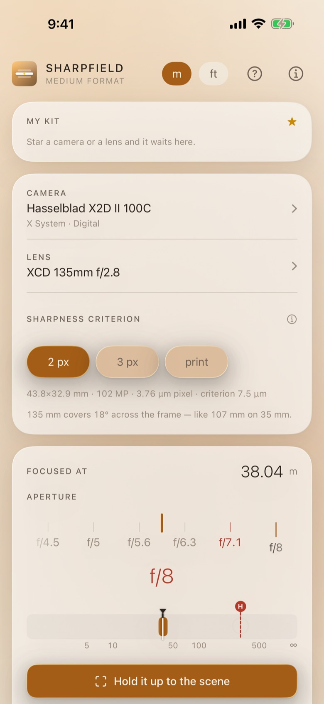
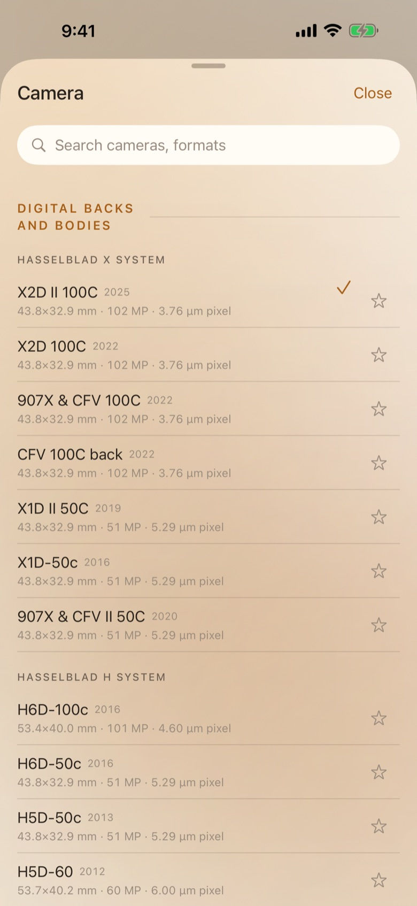
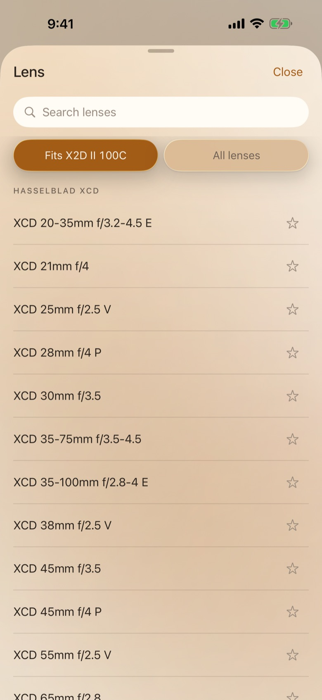
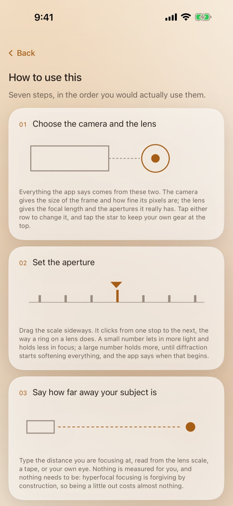

Sharpfield Medium Format
中画幅光学
为并非 35mm 的传感器而算的景深。
超焦距、前后清晰界限，以及衍射代价开始超过失焦的光圈 —— 全部根据真实的相机计算，而不是查通用表格。

为保险起见收到 f/16，结果照片比 f/8 还要软。
景深与衍射一起算，来自你机身的传感器。真正最锐的那一档是个数字，不是感觉。
它替代了什么
景深计算器有四十个。这是当其中一个是为“不是 35 mm”的传感器而造时，会变的东西。
| 问题 | 通常的答案 | Sharpfield Medium Format |
|---|---|---|
| 弥散圆 | 一个数字，来自 35 mm 胶片 | 来自你机身的画幅尺寸与像素间距 |
| 收到 f/22 | 只告诉你景深变深了 | 告诉你换来了什么，又付出了什么 |
| 近距离对焦 | 镜筒上刻的光圈值 | 有效光圈——衍射响应的是它 |
| 你的放大尺寸 | 默认当成 20 × 25 厘米 | 由你来定；所有数字跟着它走 |
弥散圆
来自你的传感器，而不是 1930 年的一条经验法则。
1/1500 法则是为 35mm 胶片和 8×10 英寸放大而写的。这款应用采用您真正拥有的机身的画幅尺寸和像素间距 —— 这正是它的答案与通用计算器不同的原因。

衍射
从这一档开始，再收光圈就是在拿清晰度换。
收缩光圈买到景深，付出的是锐度。两者一并显示，且使用在考虑皮腔延伸之后镜头实际工作的光圈。
拍摄时看得清
大字号、强对比，全部在一屏之内。
构图时需要的数字都在一个界面上，字号足以在三脚架前一臂距离、白天、不戴老花镜的情况下看清。

买之前，先看清楚
整个应用，一屏一屏，就是你拿在手里时的样子。没有摆拍，也没有尚不存在的承诺。





如何使用
三分钟设置好，之后它就是您在两次拍摄之间瞥一眼的界面。
选择您的机身
从 76 台中画幅相机中选择，数码与胶片皆有 —— 哈苏、飞思、富士 GFX、宾得 645、玛米亚、禄来、康泰时。画幅尺寸和像素间距随之带入，整个计算都建立在它们之上。
设定镜头与光圈
焦距和光圈值，可从您卡口对应的 231 支镜头中选择，也可以手动输入。若近摄，请一并设定皮腔延伸：衍射响应的是有效光圈。
读出两条界限
界面会显示超焦距、可接受清晰度的前后界限，以及总景深。旁边是衍射极限 —— 超过这个光圈继续收缩，失去的分辨率会多于得到的景深。
按它说的位置对焦
把镜头设到显示的距离，从近界到远界的一切都会落在您的弥散圆之内。拍风景时，对焦在超焦距上，可让无限远和最近的可接受点同时清晰。
用自己的照片核对
弥散圆是关于照片放多大、观看距离多近的一种判断。请在设置中定下您自己的值；界面上的每个数字都会随之改变，因为为接触印相计算的数值，并不是两米大幅输出的数值。
它还能做什么
胶片与数码
画幅从 6×4.5 到 6×9，传感器从 33×44 到完整的 645。同一机身上的胶片后背与数码后背在光学上是两台不同的相机，也被如此对待。
皮腔延伸
近摄会损失光线并改变有效光圈。两者都会显示，使微距的曝光与锐度都正确。
您自己的输出尺寸
设定您实际会做的放大倍率，弥散圆便随之调整，而不是默认 8×10。
没有信号也能用
一切都在设备上计算。无需查表、无需下载、无需同步 —— 在破晓的田野里照样能用。
在三脚架旁可读
大号数字、高对比，在您和想要的数值之间没有任何动画。
免费三天，之后永久拥有
先试用全部功能三天——不扣费，也不续订。之后一次付款，永久归你。
三天免费
全部功能，免费三天。
无需账户，也无需注册。先完整试用三天；之后只询问一次，由你决定。
价格显示在 App Store 上，以您所在地区的货币计。免费三天，之后一次付费——不会自动续费。
常见问题
为什么它的数字和其他计算器不同？
因为大多数计算器使用的是从 35mm 胶片推导出的弥散圆。这款应用使用您所选机身的画幅尺寸和像素间距，这对中画幅而言会给出明显不同 —— 也更有用 —— 的答案。
它还把衍射与失焦并列。一个告诉您 f/22 能带来巨大景深的计算器，说的是关于失焦的实话，对您刚刚付出的锐度却只字未提。
衍射极限究竟是什么？
是艾里斑增大到超过您弥散圆的那个光圈。越过它之后继续收缩，因衍射损失的分辨率会多于在景深上的收益。
它按有效光圈计算，因此近摄时会移动 —— 而那恰恰是人们最想把光圈收到底的时候。
我的相机在列表里吗？
列表中有 76 台中画幅机身，数码与胶片皆有，带各自真实的画幅尺寸与像素间距，另有 231 支镜头。如果没有您的机身，可以自行输入画幅尺寸和像素间距，其余一切都由这两个数字推导而来。
需要信号吗？
不需要。每个数值都在设备上由光学公式算出，而不是查表得来。开启飞行模式也能使用。
三天免费期如何运作？
每个应用都可以在提出任何要求之前完整使用三天。在 Fornela、Fornela Dolce 和 Talkquote 中，这三天在你首次打开应用时自动开始。在一次性购买的应用中，只需轻点一下，在 App Store 开始免费的三天试用：不会扣费，也不会续订。无论哪种方式，三天结束后应用只会询问一次，由你决定。
如何付费？
Fornela、Fornela Dolce 和 Talkquote 采用订阅——按月，或更实惠的按年。Melopocket、三款 Sharpfield 工具和三款 Stopwise 应用只需购买一次，永不续订。无论哪种，你都能获得完整的应用。没有等级、没有额外套餐、没有保留功能——付款由 Apple 收取，开发者永远看不到卡号或姓名。
我可以改变主意吗？
可以。随时在 App Store 取消：点右上角你的头像，再点「订阅」。这是唯一能停止订阅的地方——钱是 Apple 收的，应用无法替你操作。已经付过的周期内一切照常使用。
退款由 Apple 处理，不是我们——我们从来看不到你的付款信息，也无法退款。请前往 reportaproblem.apple.com，登录后选择那笔购买。
我的其他设备上会怎样？
你买的东西属于你的 Apple 账户。在 iPad 或新 iPhone 上用同一个 Apple 账户登录，打开应用，在购买页选择「恢复购买」。不会再扣一次钱。
一次购买对应一个 Apple 账户。不参与家人共享，也不能在公司里转手——第二个人需要自己买。
我的数据会被发送到某处吗？
不会。没有账户、没有登录、没有服务器。应用保存的一切都在您自己的设备上，删除应用后即消失。
它引起的唯一网络流量属于 App Store，发生在您购买、订阅或恢复时。
它使用哪种语言？
取决于您设备的设置，前提是应用已翻译成该语言；否则显示英文。没有会设错的语言选项—— 更改 iPhone 的语言，应用也会随之改变。
细节
| 平台 | iPhone 和 iPad，iOS 17 及更高版本 |
| 语言 | 英语 |
| 相机与镜头 | 76 台中画幅机身，231 支镜头 |
| 收集的数据 | 无 |
| 一个 Apple 账户 | 一次购买，对应一个 Apple 账户。不参与家人共享，也不能在公司里转手。 |
支持
付款、退款与取消
这个应用的每一笔钱都由 Apple 收取。也就是说，只有 Apple 能查询扣款、停止订阅或者退款。开发者从来看不到卡号、姓名或付款，也无法更改。
取消订阅在 App Store 里完成，别处都不行。打开 App Store，点右上角你的头像，再点订阅。取消会停掉下一次扣款；已经付过的周期会用到最后一天。请在周期结束前至少 24 小时操作，否则这次续订照样会扣。
这些数字是什么，不是什么
景深不是一条物理边界。它是一种关于“多少模糊看起来仍算清晰”的判断，而这一判断 取决于照片放多大、观看的人站得多近。这款应用把这个判断明确摆出来，而不是把它藏起来： 设定您自己的弥散圆，每个数字都会随之而变。
列表里没有我的相机
请自行输入画幅尺寸和像素间距。计算所需的就只是这两个数字，界面上的每个数值都由它们 推导而来。
数值和我原来的计算器不一样
确实会不一样。大多数计算器使用从 35mm 胶片推导的弥散圆，而且大多完全忽略衍射。 变化的内容与原因，请见上方的「常见问题」。
恢复您已经付过费的内容
购买归属于您的 Apple 账户，而不是某一台设备。换新手机或重新安装后，打开应用并在购买页面选择“恢复”。不会重复收费。
取消订阅
打开 App Store，点右上角你的头像，再点订阅。这是唯一能停止订阅的地方——钱是 Apple 收的，应用无法替你操作。取消会停掉下一次扣款，已经付过的周期会用到最后一天。一次性买断不会续订，也就没什么好取消的。
仍然没有解决？请写信到 alpenlume@gmail.com —— 请说明是哪款应用、使用的是哪台 iPhone 或 iPad，以及您原本期待发生什么。
隐私政策
最后更新于 2026年9月10日。
简要说明
这款应用不收集任何信息、不发送任何内容，也没有账户。它是一个在您设备上运行的计算器。
什么会留在您的设备上
您选择的相机、镜头以及弥散圆设置，都保存在您设备上的应用内。没有账户、 没有同步、没有服务器。删除应用即会移除它们，而它们从未存在于别处。
收集了什么
什么都没有。这款应用没有账户、没有登录、没有分析统计、没有广告标识符、没有崩溃报告服务，也没有任何形式的追踪。不会建立任何画像，也不会与任何人共享任何内容。
网络使用
这个应用没有自己的服务器：没有需要登录的地方，也永远不会有任何内容上传给开发者。它拿网络做什么——这些应用里大多数什么也不做——写在上面的“在你的设备上”一节。
有两件事确实会用到互联网，而它们都属于别人。一是 App Store，发生在您购买、订阅或恢复时。二是当您分享某样东西时 —— 一道菜、一份食谱、一份文件 —— iOS 会把它交给您选择的应用，无论是信息、邮件还是 WhatsApp，由那个应用通过自己的连接、按照自己的隐私政策发送。在您按下发送之前，什么都不会离开；而这款应用永远不会知道它去了哪里。
购买
付款完全由 Apple 处理。应用永远看不到卡号、姓名或地址；它只向 App Store 问一个问题 —— 这个 Apple 账户是否拥有该应用 —— 并得到“是”或“否”。该交易适用 Apple 自己的隐私政策。
儿童
本应用并非面向儿童，且不从任何人处收集任何信息，因此不存在任何有关儿童的信息需要披露、更正或删除。
您的权利
数据保护法赋予您查看、更正、导出和删除有关您的个人数据的权利。由于我们没有保存任何数据，应要求时也就没有什么可以提供或删除。应用拥有的一切都在您自己的设备上：删除应用即会移除它们，而它们从未存在于别处。
变更
若本政策日后有所变更，上方会注明日期。不会追溯修改，因为不存在任何被收集的数据可以因变更而被重新允许使用。